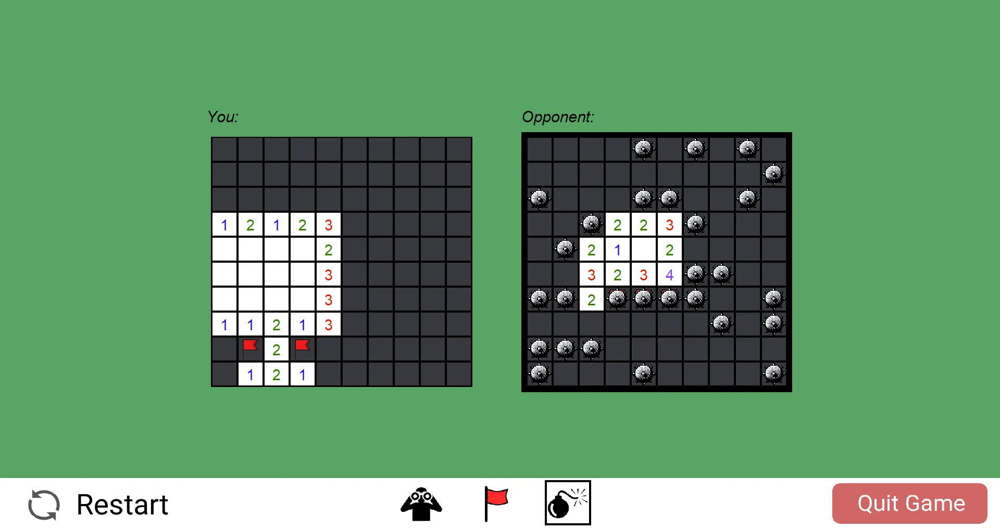
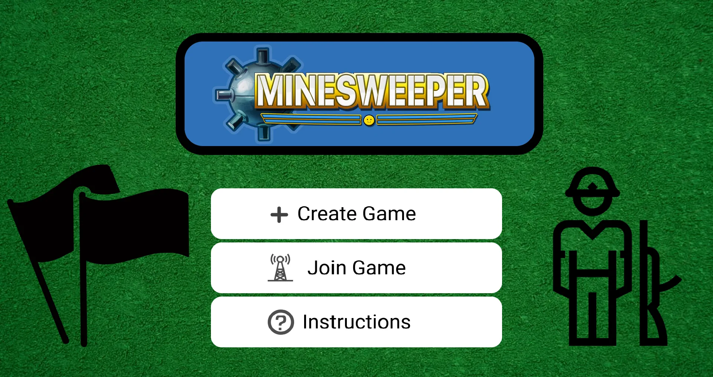
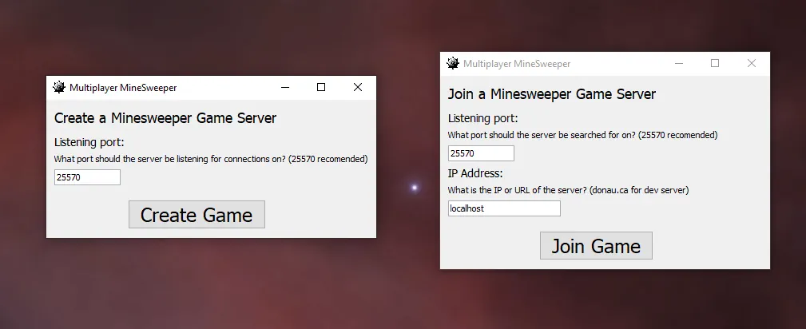

The main portion of the game has two small Minesweeper boards next to each other. Each 10x10 board is assigned to one player. Each player gets to take their turn one after the other. A turn consists of either scouting a tile or placing a mine on your opponent's board. A player can flag as many tiles as they wish in a given turn, placing flags goes not count as taking your turn. One of the notable addition to this version of the game is the ability to change the opponent's mine field during the play of the game. In place of scouting a tile one can add bombs to your opponent's board instead.
Multiplayer Minesweeper
This is a little game that I made with a friend of mine. It
was the final summative project for TEJ4M, my Grade 12
Computer Engineering course. The game is based off of the
popular and well-known game of Minesweeper, with an added
multiplayer twist. The game we made together is written in
Java and makes use of Sockets to allow for the online
multiplayer functionality. We split up the work fairly
evenly. I was in charge of making the main menu, and its
interactions with sub menus and the main game. I was also
responsible for writing the net code and ensuring 2
computers could connect to play the game. My partner Ehsan
was responsible for writing the main game and all the
functionality it needed.

We wrote the this game after I had added networking to my
Catan game and
the net code is derived off of early versions
of the Catan net code. This means the interface it very
similar to early catan versions. The spoke-and-hub network
architecture is also shared. The game state is transmitted
by writing the entire board state and some control variables
to a file on disk. Then this file is read in by a separate
thread of the program in converted into a serial string of
bytes which are sent to the server. The server then
redistributes the file to the two clients. Once a client
receives an updated game state the thread responsible to
connect to the server calls a trigger in the main thread of
the program to read in the file off of disk again.

The main menu that was one of my main contributions.

The view seen by the second player when attempting
to connect to the first player.